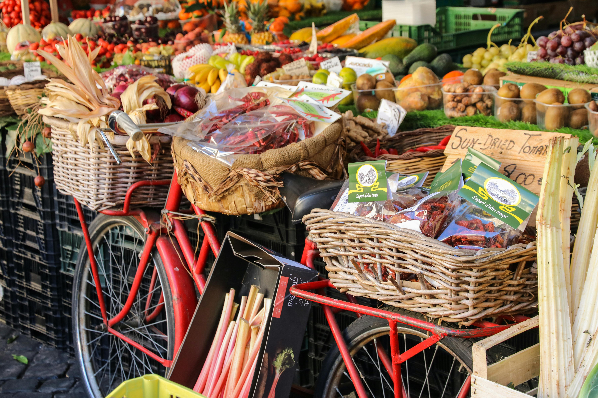

¿De dónde nace esta iniciativa?
Hola, soy Steven, publicista egresado del SENA y fundador de Stev Arte, una agencia publicitaria que nace con un propósito claro: apoyar a los emprendedores locales. Como emprendedor, he vivido en carne propia los desafíos que enfrentamos a diario, esos momentos en los que nos cuestionamos si valió la pena arriesgar todo por nuestro negocio, o si sería más fácil rendirse y buscar un empleo fijo, aunque no nos llene. Esta realidad la he observado no solo en mi experiencia personal, sino también en toda la localidad de Tunjuelito.
Fue entonces cuando entendí la importancia de dar visibilidad a aquellos que están comenzando su camino empresarial. El apoyo mutuo y la colaboración entre emprendedores locales son clave para que los sueños no se desvanezcan. Por eso decidí transformar mi enfoque y darle a mi emprendimiento un propósito social y local. Quiero que la publicidad sea accesible para todos, y con esta iniciativa, busco abrir puertas para que más negocios como el tuyo lleguen a nuevos mercados, sin barreras ni limitaciones.
Misión
Nuestra misión es fortalecer el tejido empresarial de Tunjuelito, impulsando la visibilidad de los emprendedores locales y conectándolos con nuevas oportunidades de negocio. A través de esta plataforma, buscamos ampliar su alcance en el mercado y mantener a la comunidad informada sobre programas, obras e incentivos que contribuyan al crecimiento y consolidación de sus emprendimientos.
Impacto del proyecto en la comunidad
Esta iniciativa busca brindar a la comunidad una herramienta digital que le permita mantenerse informada sobre temas de interés, programas locales y negocios emergentes. Al crear un canal de comunicación directo entre consumidores y emprendedores, fortalecemos el comercio local, promovemos la economía circular y fomentamos el apoyo entre vecinos. Además, buscamos construir una red colaborativa donde los pequeños empresarios puedan compartir sus historias, acceder a oportunidades de crecimiento y sentirse acompañados en su proceso emprendedor.
